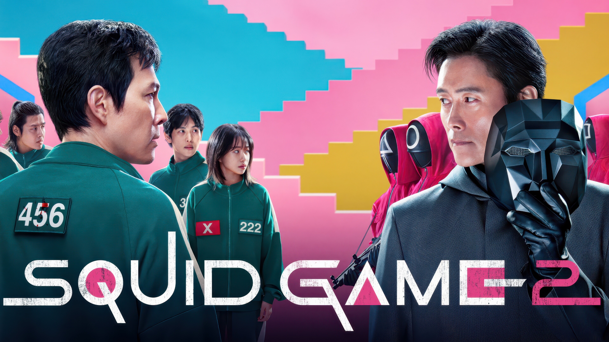

Unlimited movies, TV

Stranger things
No, Stranger Things is not a true story, but it is inspired by real-world conspiracy theories and events, particularly the supposed Montauk Project. This alleged series of secret government.

Squid Game
Hoping to win easy money, a broke and desperate Gi-hun agrees to take part in an enigmatic game. Not long into the first round, unforeseen horrors unfold. But their realities in the outside world may prove to be just as unforgiving as the game.

Wednesday
Thing is a disembodied hand. He serves as Wednesday's right hand and is considered part of the Addams Family. He is portrayed by Victor Dorobantu and appears in seasons one and two.